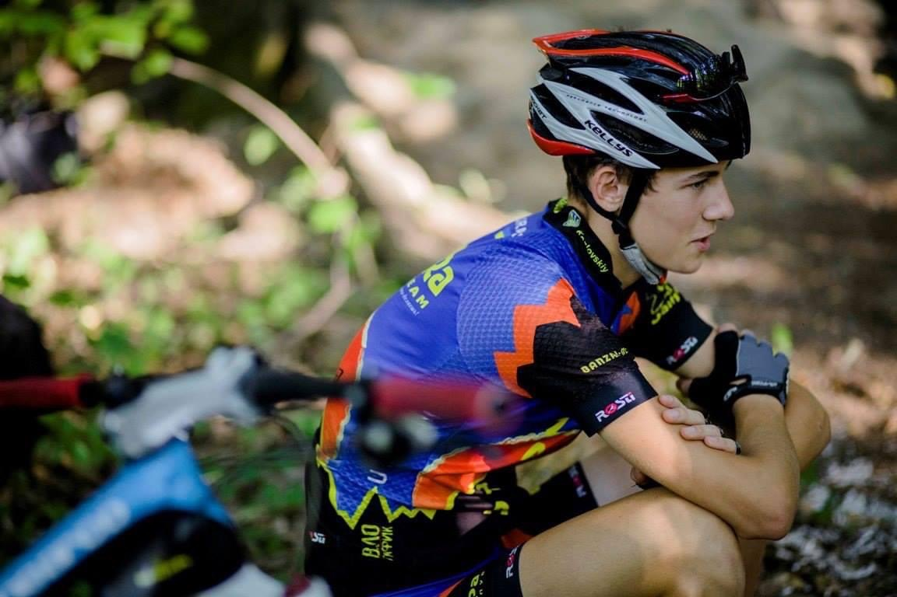
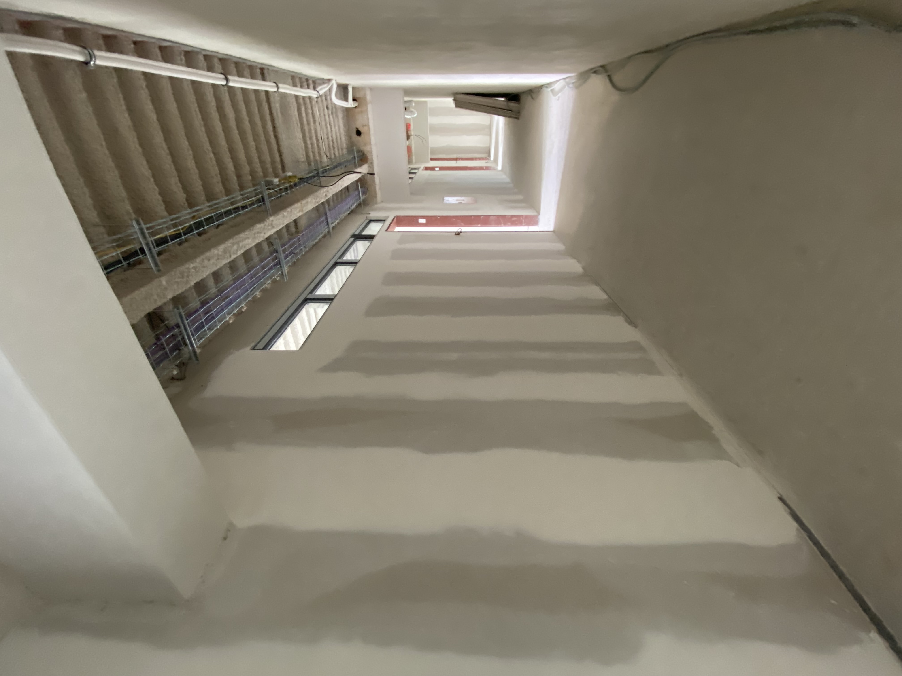

Моя кар`єра велосипедиста
2010 рік я почав займатись велоспортом. До цього все життя їздив (13 років), але одного разу з друзями поїхали кататись в ліс і побачили крутого чувака у формі і на крутому байку. Він сказав: пацанчики, хто хоче займатись велоспортом. Само-собою, що наступного дня ми уже поїхали на тренування. Згодом, із нашої банди залишився я один, але в новій банді. Так мене затягнуло дуже сильно і на довго) Почали по фану кататись кожен день. Я лише думав як піти швидше з уроків і їхати на тренування. Далі почались любительські змагання на яких я почав показувати крутий результат.
2012 стартую перший свій чемпіонат України серед юнаків (до 16 років) і виграю його. Мене тоді взагалі ніхто не знав і тренера почали придивлятись і конкурувати між собою хто мене забере. Далі я почав вигравати все підряд і мене взяли в донецьку команду ISD (тоді вона була досить крута).
2014 виграю чемп України серед юніорів (до 18). Тоді почались виїзди закордон у складі збірної команди України. Було багато успішних виступів і так само провальних на яких вчився і удосконалювався. Тоді зрозумів який рівень у світі, до якого нам дужееее далеко. У своїй категорії в Україні виграю все підряд 14-15 роки.
Приблизно тоді я познайомився з Жекою. Це ми копаємо трампліни і я показую як проїзжати технічні елементи;)
2016 зайняв 2 місце на основному чемпіонаті України де вирішується хто почне носити чемпіонську майку до наступного року. Вона відрізyяється від інших, вся біла і посередині прапор з гербом. Дуже багато часу проводили закордоном, багато міжнародних стартів, так само успішних і провальних. Після провальних особливо мотивує задуматись, що саме робиш не так і починаєш пробувати щось нове. Так я почав сам тренуватись, вивчати як тренуються у світі, а не по нашим застарілим планам часів совка. І саме в цей момент почалось найцікавіше.
Tест на лактат
2017 я виграю основний чемп і представляю Україну на міжнародних стартах в чемпіонській майці. Це круто мотивує, бо чемпіони кожної країни виділяються формою. Я почав активно вивчати тренувальний процес, фізіологію людини і взагалі весь вільний час проводити в інтернеті і щось гуглити) Це круто прокачує твій навик навчатись чомусь новому! Я зараз розумію для чого навчальні заклади, в першу чергу вони тренують тебе вчитися і звісно дають знайомства, які зазвичай залишаються з тобою протягом життя.
Зробив кастомну раму. Задоволений результатом! Людина вклала душу в проект.
Усі наступні роки я все більше занурююсь в тренувальний процес, вивчення літератури про :
- фізіологію
- дієтологію
- нутріціологію
Почалась друга історія. Я почав думати, як заробляти гроші в інтернеті. І знайшов не лише як заробити а і втратити навіть швидше ніж заробити)) Історія довга, але розповім стисло. Почав займатись IPO (первинне розміщення акцій на біржі), але я зайшов в кінці хайпу і те що мені давали декілька акцій на мою алокацію, які спочатку були в + а потім через 3 місяці розлоку було -50%. Але я швидко зрозумів які кнопочки нажимати, скачав твітер і почав дивитись що америкоси пишуть. Це був листопад 2020. Пандемія, американська економіка закидується грошима, друкарський станок працює, домогосподаркам і не лише, видаються гроші в розмірі 1900$ кожен місяць в якості допомоги. Вони нікуди не їздять, бо обмеження і всі почали інвестувати в акції. В Америці інвестує кожен перший, навіть собака)) Ну а я почав купувати різні акції про які писали на той час для мене авторитетні тіпи, купив я:
- AMC
- BB
- SNDL
Це лише все починається, я почав цікавитись криптою.
Ну це прям дужееее довга історія)) Якщо коротко, я щось там заробляв пальцем вверх, а потім за 30 сек літом 2021 втратив 1100$ на очах. Тоді було перше велике падення крипти, але мене це не зупинило, я почав сам розвиватись і почав щось з перемінним успіхом заробляти. Далі почалось друге падіння де затянули всіх і триває до сьогодні, так звана крипто зима. Я зрозумів, що все херня, треба знайти собі ментора. Знайшов крутих хлопців зі Львову, вивчився, але часу немає практикуватись взагалі. А чому немає часу на практику? Бо я залишив кар,єру в листопаді 2021, зустрів дівчину, купив машину і поїхав на заробітки в Чехію, бо крипта скам, акції в гузиці, треба гроші десь брати.


Перша вакансія на яку пішов, це гіпсокартон. Мене затянуло на пів року) Було екстра важко, але працював з нашим українцем, який тут проживає і він багато в чому допоміг і навчив. У нього топ інструмент і передові технології. В Європі такого не побачите. Це був цікавий експіріенс)


Тут я завершую працювати і бачу чисто випадково курс у Жеки 31 серпня), а у мене ще курс по крипті висить. Вирішив спробувати, так як зараз буду мати достатньо часу на навчання (я надіюсь). Однозначно хочу розвиватись в інтернеті, але для цього треба закрити питання базових потреб, а це знову таки підробіток. (Можливо хтось є у Варшаві і підскаже цікаві варіанти) Зараз я студент курсу по верстці, паралельно вивчаю торгівлю на крипто-форекс ринках. Амбіції великі, залишилось працювати і йти до своєї мети! Я читав домашку до уроку 1, де описували про собе, то переважно всі хочуть вийти із зони комфорту вивчити щось нове і почати розвиватись у новому напрямку. Ви молодці! Це дуже круте рішення, особливо коли вам за 40 і у вас сім.я! Це заслуговує поваги!